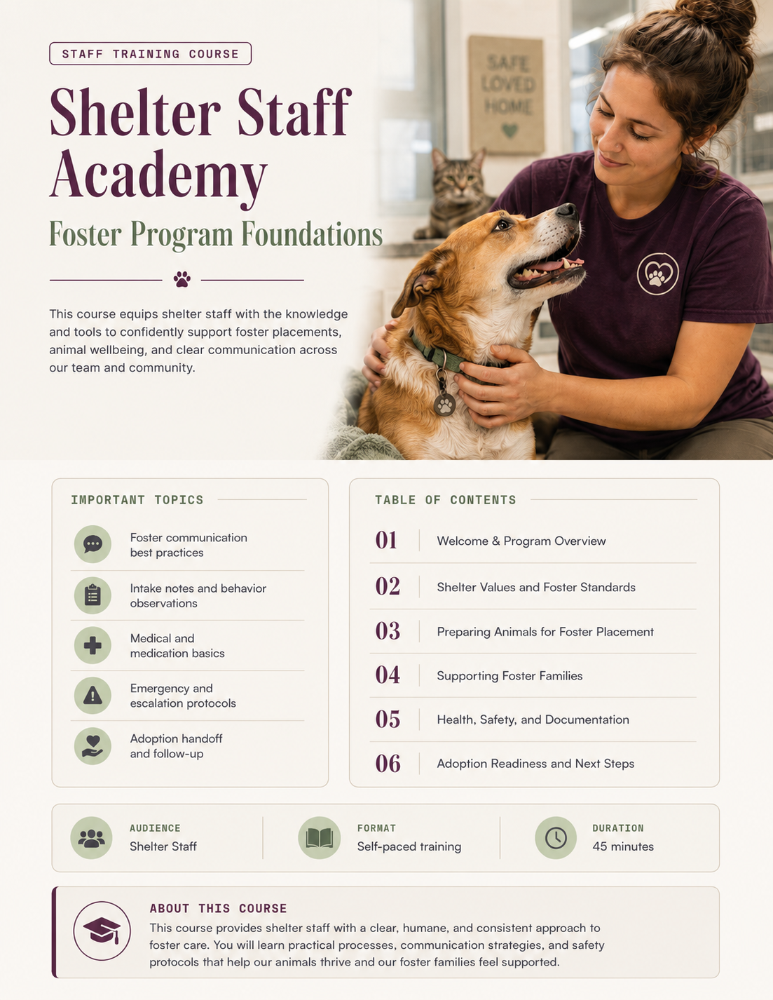
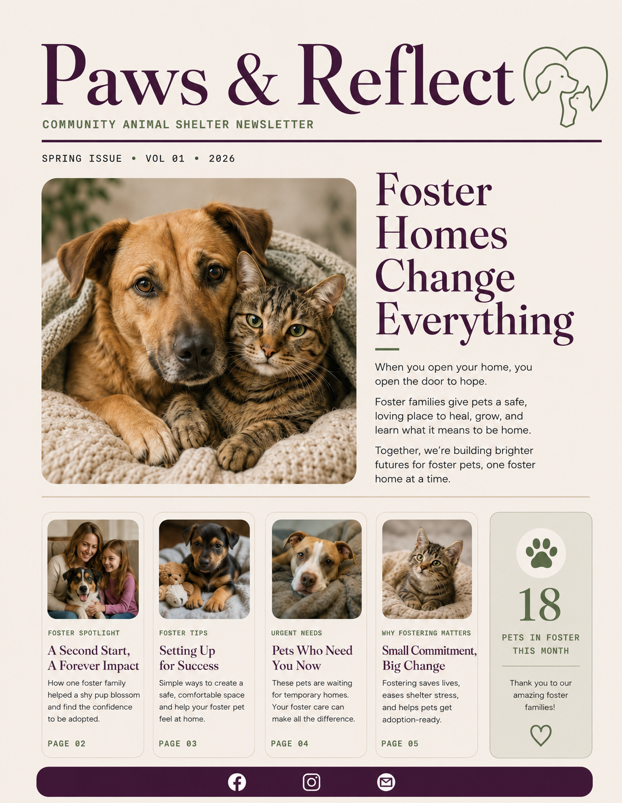
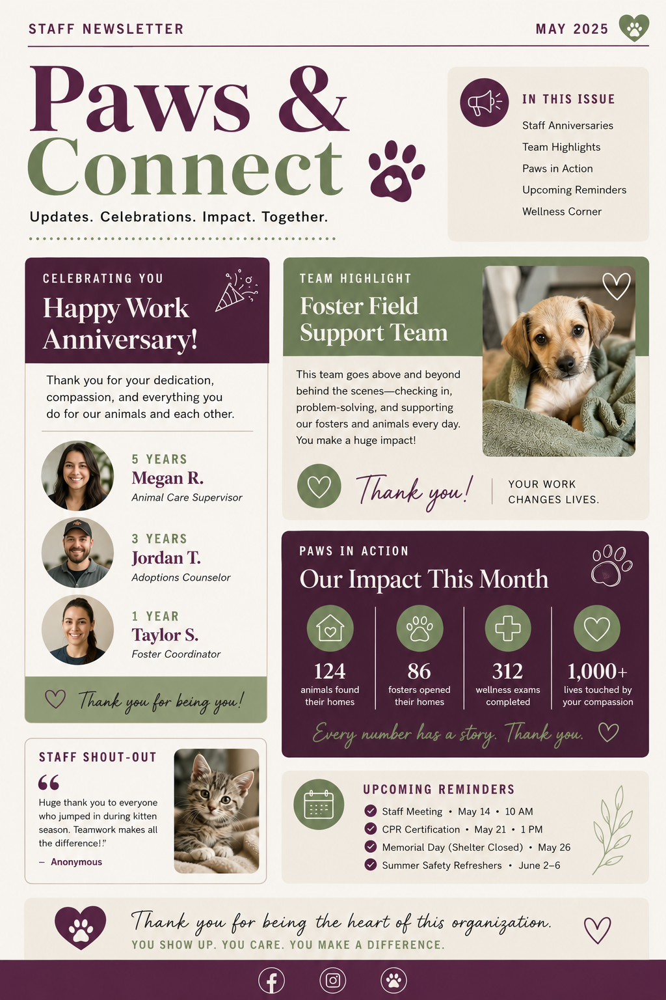

Foster Program Foundations Training
A staff-facing course concept with an image, important topics, and a table of contents to support consistent onboarding and shared expectations.
Recreated portfolio project
A portfolio-safe case study showing how structured training, foster communication, and staff engagement tools can support volunteer confidence, retention, and consistent program operations.

Why this project
This concept was created for a Foster Manager application package. It is not a real shelter program and does not use employer-owned content. The goal was to demonstrate how my training, onboarding, communications, and volunteer experience could translate into foster program leadership.
The challenge
Foster families and shelter staff need simple, repeatable tools that reduce confusion and help people feel prepared. A strong foster program also depends on consistent onboarding, ongoing communication, appreciation, and visibility into what is working.
This recreated system focuses on three practical needs: preparing staff, supporting foster families, and keeping the internal team aligned.
Mockup artifacts
A staff-facing course concept with an image, important topics, and a table of contents to support consistent onboarding and shared expectations.

A foster-focused communication piece designed around reminders, appreciation, resources, and ongoing engagement.

A staff-only newsletter concept highlighting anniversaries, participation, team updates, and recognition.
What this demonstrates
Turning complex workflows into clear, learner-friendly onboarding materials.
Using recognition, communication, and confidence-building to keep people engaged.
Thinking in systems: roles, timelines, expectations, feedback loops, and repeatable processes.
Creating resources that support staff, volunteers, foster families, and the animals in their care.
Relevant background
My professional background includes enablement, LMS administration, onboarding programs, SOP development, staff coaching, reporting, and training across regulated, multi-site environments.
My animal welfare background includes shelter volunteering, foster caregiving, enrichment support, dog-walking training, fundraising events, and volunteer mentoring.
Related creative training example

In a previous L&D role, I created a similar comic-style training concept to help staff connect with core competencies through scenarios instead of another standard document. This recreated cover is included as a portfolio-safe example of creative learning design.